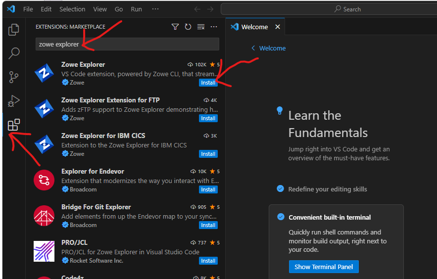
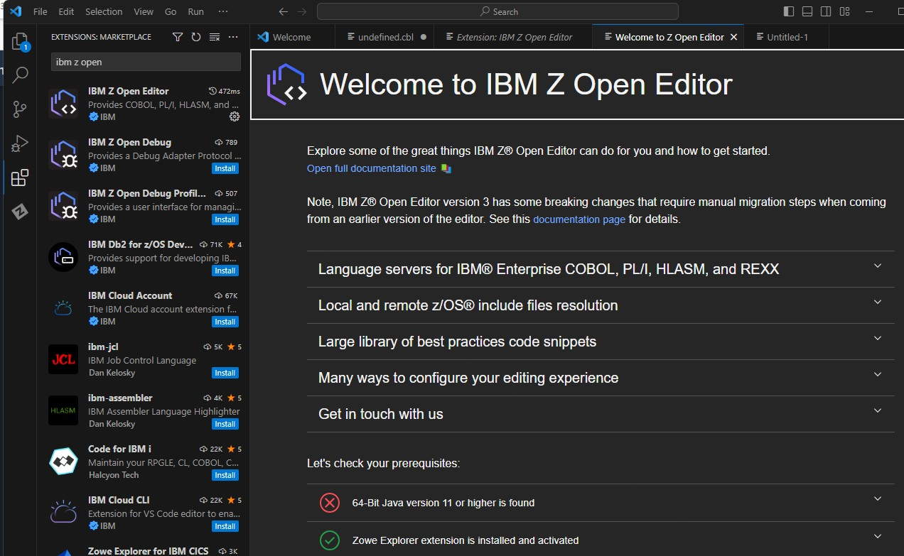

COBOL编程
1. cobol是什么
cobol = Common Business Oriented Language
是专门为商业设计的语言。现如今，每一天，cobol仍然处理超过3 trillion美元的商业活动。
（给我的感觉就是，它很专业，为经济系统设计。并且它很“贵”）
cobol是一种编译型语言。
（c, c++这种属于编译型语言。python属于解释型语言。）
本文档的目的是给初学者看的，理解如何使用cobol语言。
本文档的内容包括，如何在Visual studio Code和其他编辑器上使用cobol语言。
如何写，测试，执行，和debug cobol语言。
2. cobol 的历史
发布于1940年4月。距今83年历史（2023年）。
python发布于2000年10月，距今23年历史。
所以有很多系统是cobol写的，而不是像python这样这么新的语言。
95%的ATM交易
80%的金融交易
美国政府的金融系统
都使用cobol编写
也就是说整个美国的经济系统都运行在cobol上，想要改变cobol换成其他语言，比如说Java，不是一朝一夕就能做到的。
2.1 术语
“Mainframes” 是一种用于大型、复杂的计算任务和数据处理的计算机系统。这种计算机通常在大型企业和政府机构中使用，以处理大量的数据和运行高度复杂的程序。
当人们说 “dinosaur mainframes” 时，他们通常是在讲述那些非常旧、过时，但仍在使用中的大型计算机系统。这里的 “dinosaur”（恐龙）用作形容词，意味着这些系统是陈旧和过时的，但仍然有一定的应用，就像恐龙一样是“史前”的生物。
这个词组通常用来强调这些系统的陈旧性，以及它们在现代计算环境中可能不再是最有效或最现代化的解决方案。然而，这也可能是对这些系统持续应用和稳定性的一种认可。
2.2 大型机
与以前的“大铁家伙”相比，现在的大型机要小很多。 最新的大型机采用标准的 19 英寸机架，与数据中心内的其他平台无缝共存。 一台 IBM Z15™ 单机架系统所需的机房面积只有运行相同工作负载和吞吐量的 x86 2U 服务器的 75%，能耗也比后者要少 40%。
2.3 平均收入
cobol程序员的平均收入是74万人民币。（不包括中国的岗位）
3. cobol的安装
3.1 zowe explorer是什么
是一个VS code的开源扩展，可以让开发者和系统管理员和z/OS主流框架进行通信
如果你没有VS code，可以在这里下载
使用zowe explorer
这里有一个官方文档

如图所示，打开VS code, 安装zowe explorer插件
zowe explorer的功能
zowe explorer可以让你操作data sets数据集，unix system service files，和进程和任务。
“data sets” 意为 “数据集”，是指一组相关的数据项或数据记录的集合，通常用于统计分析、研究或其他数据处理任务。数据集可以包含各种类型的信息，如数字、文本、图像等，用于进行数据分析、建模和可视化等各种数据科学和计算任务。
“Unix System Service Files” 是指 Unix 操作系统中用于配置和管理系统服务的文件。这些文件通常存储在 /etc 目录下，用于指定系统服务的各种配置选项和参数。每个服务都有一个相应的配置文件，这些文件可以包括服务启动方式、端口号、日志设置等信息。
常见的 Unix 系统服务文件包括：
/etc/passwd: 包含用户账户的信息。/etc/group: 包含用户组的信息。/etc/hosts: 用于设置主机名与IP地址的映射关系。/etc/hostname: 包含系统主机名。/etc/resolv.conf: 包含DNS解析配置信息。/etc/fstab: 包含文件系统挂载信息。/etc/ssh/sshd_config: SSH 服务器的配置文件。/etc/network/interfaces或/etc/sysconfig/network-scripts/ifcfg-*: 网络接口的配置文件，具体名称因系统而异。/etc/sudoers: sudo 命令的配置文件，用于授权用户执行特权命令。
这些文件中的信息对于系统的正常运行和安全性非常重要，因此需要小心修改和管理。修改这些文件通常需要超级用户（root）权限。不正确的更改可能会导致系统故障或安全漏洞。
3.2 IBM Z Open Editor

IBM Z Open Editor 是一款 Visual Studio Code（VS Code）的扩展插件，专门设计用于支持 IBM Z 主机系统上的应用程序开发。它的主要用途是为 COBOL 和 PL/I 等主机上常见的编程语言提供强大的集成开发环境，以便开发人员可以更轻松地编写、调试和维护主机应用程序。
以下是 IBM Z Open Editor 插件的主要功能和用途：
语法高亮和代码提示：提供 COBOL 和 PL/I 代码的语法高亮和自动代码提示，使开发人员能够更轻松地编写正确的代码。
智能代码补全：插件可以根据你的输入提供智能代码补全建议，加快编码速度并减少错误。
集成构建和调试：允许你在 VS Code 中配置和运行主机上的编译和调试任务，以便进行应用程序构建和调试。
JCL 支持：支持 Job Control Language（JCL）的语法高亮和代码提示，用于管理批处理作业。
主机文件集成：支持与主机上的文件系统交互，包括上传和下载文件等操作。
扩展集成：与其他 IBM Z 相关的扩展集成，如 Zowe CLI 和 IBM Z Development and Test Environment。
IBM Z Open Editor 旨在简化 IBM Z 主机上的应用程序开发流程，提供现代化的开发工具，以便开发人员更容易地在主机环境中工作。它有助于促进 COBOL 和 PL/I 等老式编程语言的现代化开发实践，并使开发人员能够更轻松地处理复杂的主机应用程序。
3.3 COBOL debugger
COBOL Debugger 是 Visual Studio Code（VS Code）中的一个插件，用于在 COBOL 编程中进行调试。它的主要作用是帮助开发人员识别和解决 COBOL 代码中的问题，以确保程序在运行时正常工作。
具体来说，COBOL Debugger 插件提供了以下功能和用途：
断点设置：你可以在 COBOL 代码中设置断点，以指定程序在运行到断点位置时停止执行，从而可以逐步检查代码的执行过程。
变量监视：你可以监视程序中的变量和数据结构，查看它们的当前值，以帮助识别问题或跟踪程序状态。
单步执行：允许你逐行执行 COBOL 代码，以便深入了解程序的运行流程，并检查每一步的结果。
堆栈跟踪：提供了一个堆栈跟踪视图，显示调用堆栈中的各个层级，帮助你理解程序的调用关系。
变量查找：允许你查找特定变量的值，无需手动浏览代码。
条件断点：可以根据条件设置断点，只有在满足特定条件时才会触发断点。
多线程调试：支持多线程程序的调试，可以跟踪和分析多个线程的执行。
总之，COBOL Debugger 插件是用于 COBOL 编程中的调试工具，可帮助开发人员诊断和解决代码中的问题，确保程序的正确性和稳定性。使用它可以更轻松地调试 COBOL 应用程序，提高开发效率。
3.4 code4z
“code4z” 是一个与 IBM Z 主机系统相关的 Visual Studio Code（VS Code）插件。它的全名可能是 “IBM Z Open Editor - code4z”。
该插件是 IBM Z Open Editor 扩展的一部分，用于支持 COBOL 和 PL/I 等主机上的编程语言。主要用途包括：
COBOL 和 PL/I 语法高亮：提供 COBOL 和 PL/I 代码的语法高亮，使代码更易于阅读和编写。
代码自动完成：为 COBOL 和 PL/I 提供代码自动完成功能，帮助减少输入错误并提高编程效率。
代码片段：提供常用的 COBOL 和 PL/I 代码片段，以便快速插入常见的代码结构。
集成构建和调试：支持在 VS Code 中配置和运行 COBOL 和 PL/I 程序的构建和调试任务。
主机文件集成：与主机文件系统集成，支持上传和下载文件等操作。
堆栈跟踪和调试工具：帮助开发人员在 VS Code 中进行堆栈跟踪和调试 COBOL 和 PL/I 程序。
4 安装node和java
https://nodejs.org/en/download
Windows Installer (.msi)
https://developer.ibm.com/languages/java/semeru-runtimes/downloads/
Windows java
4.1 CLI是什么
Zowe CLI（命令行界面）是一个开源的命令行工具，用于与 IBM Z 主机系统进行交互和管理。它是 Zowe（一个用于 IBM Z 环境的开源生态系统）的一部分，旨在为开发人员、系统管理员和运维人员提供一种便捷的方式来执行各种操作，包括文件操作、作业管理、数据查询等。
4.2 Zowe CLI 安装
npm install -g @zowe/cli